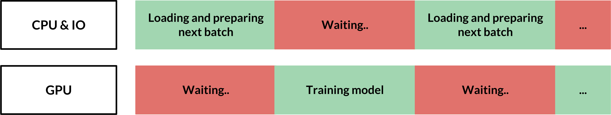
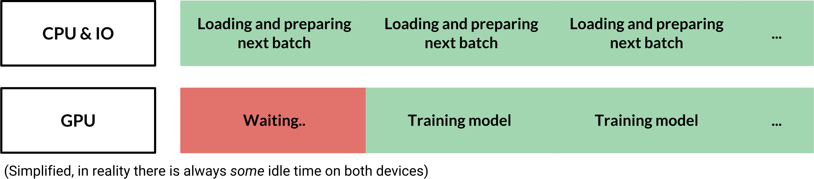
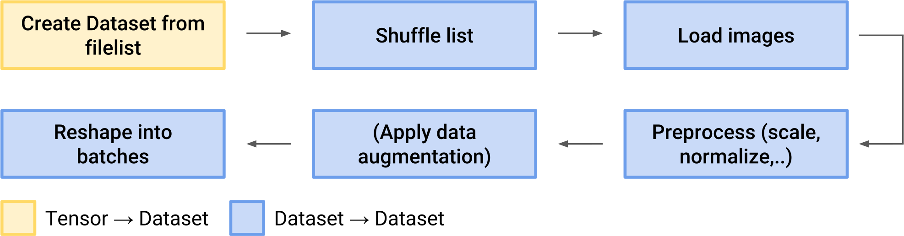

Most beginner tensorflow tutorials introduce the reader to the feed_dict method of loading data into your model where data is passed to tensorflow through the tf.Session.run() or tf.Tensor.eval() function calls. There is, however, a much better and almost easier way of doing this. Using the tf.data API you can create high-performance data pipelines in just a few lines of code.
In a naive feed_dict pipeline the GPU always sits by idly whenever it has to wait for the CPU to provide it with the next batch of data.

A tf.data pipeline, however, can prefetch the next batches asynchronously to minimize the total idle time. You can further speed up the pipeline by parallelizing the loading and preprocessing operations.

Implementing a minimal image pipeline in 5 minutes
To build a simple data pipeline you need two objects. A tf.data.Dataset stores your dataset and a tf.data.Iterator allows you to extract items from your dataset one-by-one.
A tf.data.Dataset for an image pipeline could (schematically) look like this:
[
[Tensor(image), Tensor(label)],
[Tensor(image), Tensor(label)],
...
]
tf.data.Iterator to retrieve image-label pairs one by one. In practice, multiple image-label pairs would be batched together so that the iterator pulls out one entire batch at a time.
A dataset can be created either from a source (like a list of filenames in Python) or by applying a transformation to an existing dataset. Here are some examples of possible transformations:
Dataset(list of image files) → Dataset(actual images)Dataset(6400 images) → Dataset(64 batches with 100 images each)Dataset(list of audio files) → Dataset(shuffled list of audio files)
Defining the computation graph
A minimal data pipeline for images could look like this:
All of the following code is placed in your computation graph definition along with the model, loss, optimizer,... First create a tensor from a list of files.
# define list of files
files = ['a.png', 'b.png', 'c.png', 'd.png']
# create a dataset from filenames
dataset = tf.data.Dataset.from_tensor_slices(files)
tf.data.Dataset.map() to apply this function to all elements (file paths) in the dataset.[1] You can also add a num_parallel_calls=n argument to map() to parallelize the function calls.
# Source
def load_image(path):
image_string = tf.read_file(path)
# Don't use tf.image.decode_image, or the output shape will be undefined
image = tf.image.decode_jpeg(image_string, channels=3)
# This will convert to float values in [0, 1]
image = tf.image.convert_image_dtype(image, tf.float32)
image = tf.image.resize_images(image, [image_size, image_size])
return image
# Apply the function load_image to each filename in the dataset
dataset = dataset.map(load_image, num_parallel_calls=8)
tf.data.Dataset.batch() to create batches:
# Create batches of 64 images each
dataset = dataset.batch(64)
tf.data.Dataset.prefetch(buffer_size) to the end of your pipeline. This ensures that the next batch is always immediately available to the GPU and reduces GPU starvation as mentioned above. buffer_size is the number of batches that should be prefetched. buffer_size=1 is usually sufficient although in some cases, especially when the processing time per batch varies, it can help to increase it.
dataset = dataset.prefetch(buffer_size=1)
iterator = dataset.make_initializable_iterator()
tf.data.Iterator.get_next() to create a placeholder-tensor that tensorflow fills with the next batch of images every time it is evaluated.
batch_of_images = iterator.get_next()
feed_dict, batch_of_images replaces your previous placeholder variable.
Running the session
Now run your model as usual but make sure to evaluate the iterator.initializer op before every epoch and catch the tf.errors.OutOfRangeError exception after every epoch.
with tf.Session() as session:
for i in range(epochs):
session.run(iterator.initializer)
try:
# Go through the entire dataset
while True:
image_batch = session.run(batch_of_images)
except tf.errors.OutOfRangeError:
print('End of Epoch.')
The program nvidia-smi allows you to monitor your GPU utilization and can help you understand bottlenecks in your data pipeline. The average GPU utilization should usually be above 70-80%.
A more complete data pipeline

Shuffle
Use tf.data.Dataset.shuffle() to shuffle the filenames. The argument specifies how many elements should be shuffled at a time. In general, it's recommended to shuffle the entire list at once. See this answer on Stackoverflow
dataset = tf.data.Dataset.from_tensor_slices(files)
dataset = dataset.shuffle(len(files))
Data augmentation
You can use the functions tf.image.random_flip_left_right(), tf.image.random_brightness(), tf.image.random_saturation() to perform simple data augmentation on your images. [1]
# Source
def train_preprocess(image):
image = tf.image.random_flip_left_right(image)
image = tf.image.random_brightness(image, max_delta=32.0 / 255.0)
image = tf.image.random_saturation(image, lower=0.5, upper=1.5)
# Make sure the image is still in [0, 1]
image = tf.clip_by_value(image, 0.0, 1.0)
return image
Labels
To load labels (or other metadata) along your images simply include them when creating the intial dataset:
# files is a python list of image filenames
# labels is a numpy array with label data for each image
dataset = tf.data.Dataset.from_tensor_slices((files, labels))
.map() allow label data to pass through:
def load_image(path, label):
# load image
return image, label
dataset = dataset.map(load_image)